Cisco @ OCP 
From running SONiC on the Cisco 8000 platform to the enablement of IOS-XR on OCP compliant-hardware - Cisco continues to help build and work with the OCP community, leading the charge for vendors in the disaggregation space. Let's dive in to learn more!
Disaggregating the Cisco 8000: Running SONiC on Fixed and Modular Hardware
Take a glimpse into our disaggregation journey as we showcase OCP's SONiC software running on fixed (Cisco 8201) and Modular (Cisco 88XX) hardware. From the Cisco launch event in December 2019 to running SONiC natively on the Cisco8000, it's been quite a journey!
Enabling SONiC on the Cisco 8000 Platform: A Deep Dive
What does it take to enable SONiC on a hardware platform ? How did we do it for the Cisco 8000 ?
Akshat Sharma dives into the details - from the integration with the ASIC SDK to the plugins for the peripheral hardware such as LEDs and optics and a lot more. Includes a short demo to showcase the integration.
With the capabilities of the Cisco Silicon One ASIC and the hardware root-of-trust capabilities of the Cisco8000 hardware, the disaggregation community is all set to reap the benefits of this enablement!
OCP-2020 Demo (Long Version): SONiC on the Cisco 8000 with Docker Swarm Cluster workflows
In this demo we set up a Leaf Spine topology with 3 Cisco 8201s, use ONIE to bring up SONiC on each device and establish leaf-leaf connectivity using eBGP sessions.
To make things interesting, a docker swarm cluster is running on host machines connected to the leaves to send end-to-end scaled video traffic over multiple RTSP sessions. We had fun setting it up - hope you have as much fun checking it out!

Packet Pushers Podcast: Cisco And The Art Of Disaggregation With IOS-XR
On this podcast, we get nerdy about disaggregation - the art of mixing and matching software from one vendor and hardware from another.
Bhavna Prasad, Product Manager at Cisco; and Akshat Sharma, Technical Marketing Engineer for Cisco’s Service Provider BU join the podcast to discuss the different kinds or degrees of disaggregation, and then drill into specifics around IOS-XR and how it was enabled on a curated list of OCP hardware.
We also look at the programmatic capabilities and interfaces of IOS-XR, what hardware it’s available on, use cases, and more..
Enabling IOS-XR on Third-Party Network Hardware
In March, 2018 - we announced the enablement of Cisco's IOS-XR operating system on a curated set of OCP-ACCEPTED™ and OCP-INSPIRED™ hardware.
Akshat Sharma breaks down a typical network stack and explains the points of integration between network hardware and the network operating system.
Learn how IOS-XR with its various abstraction layers makes the integration process seamless. Includes a demo booting up IOS-XR on an Edgecore AS7816-64X platform.
More Content to get you started
Some presentations, blogs and articles showcasing Cisco's involvement with OCP and the open-networking community, curated for your benefit:
SONiC on Cisco 8000
OCP Global Summit, 2020
Praveen Bhagwatula, Cisco Fellow, Engineering explains how SONiC was enabled on the Cisco 8000 - making it the first "native" enablement of SONiC on a modular chassis.
Enabling IOS-XR on Third-Party Network Hardware
Blog, xrdocs.io
In this xrdocs blog, Akshat Sharma, TME, Cisco breaks down all the steps it takes to disaggregate a network operating system on whitebox hardware and recounts how IOS-XR was enabled on selected OCP-ACCEPTED™ hardware
Get in touch
If you'd like to know more about what Cisco is doing with the OCP community and how Cisco can help you achieve your network's goals, get in touch with us here:
-
Email
ocpsp-external@cisco.com -
Social